Ogrodzenia posesyjne
Spójna linia frontowa z przęsłami, bramą dobranymi pod względem wzoru, koloru i wysokości.
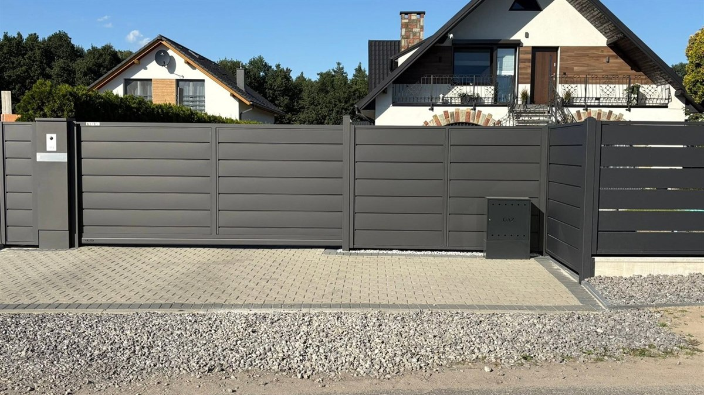
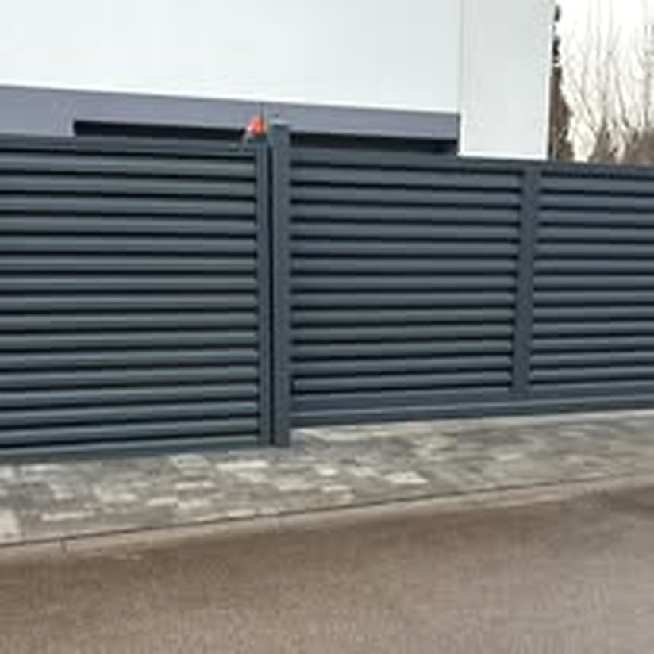
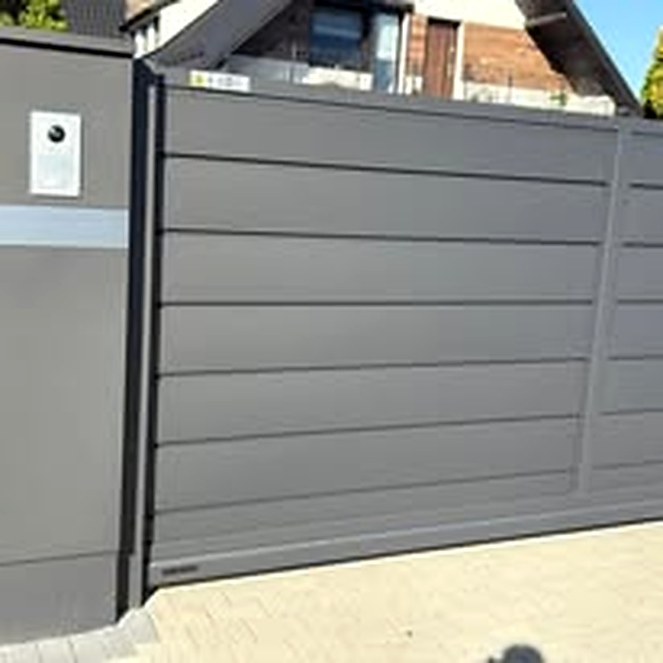
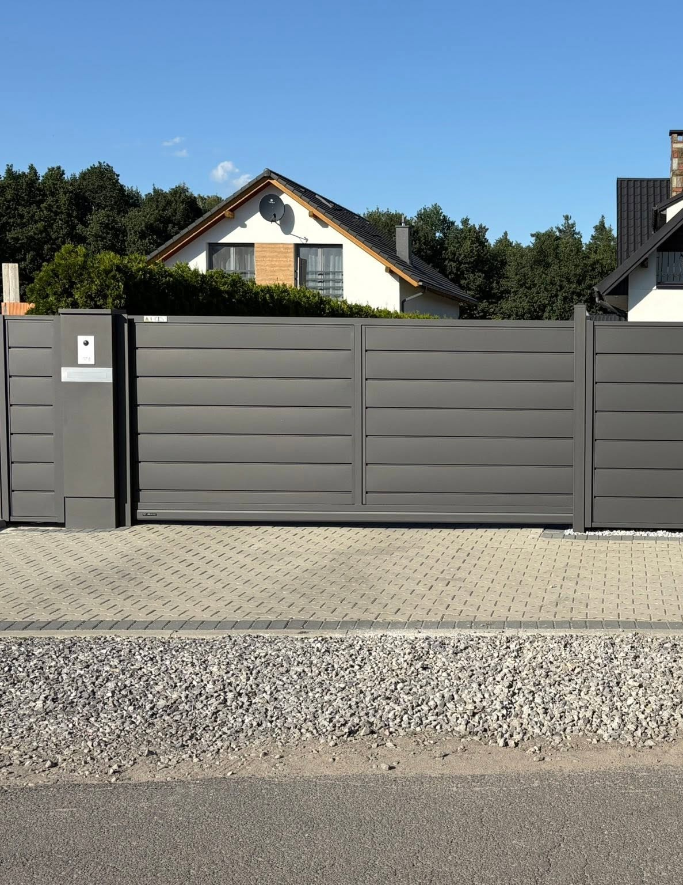
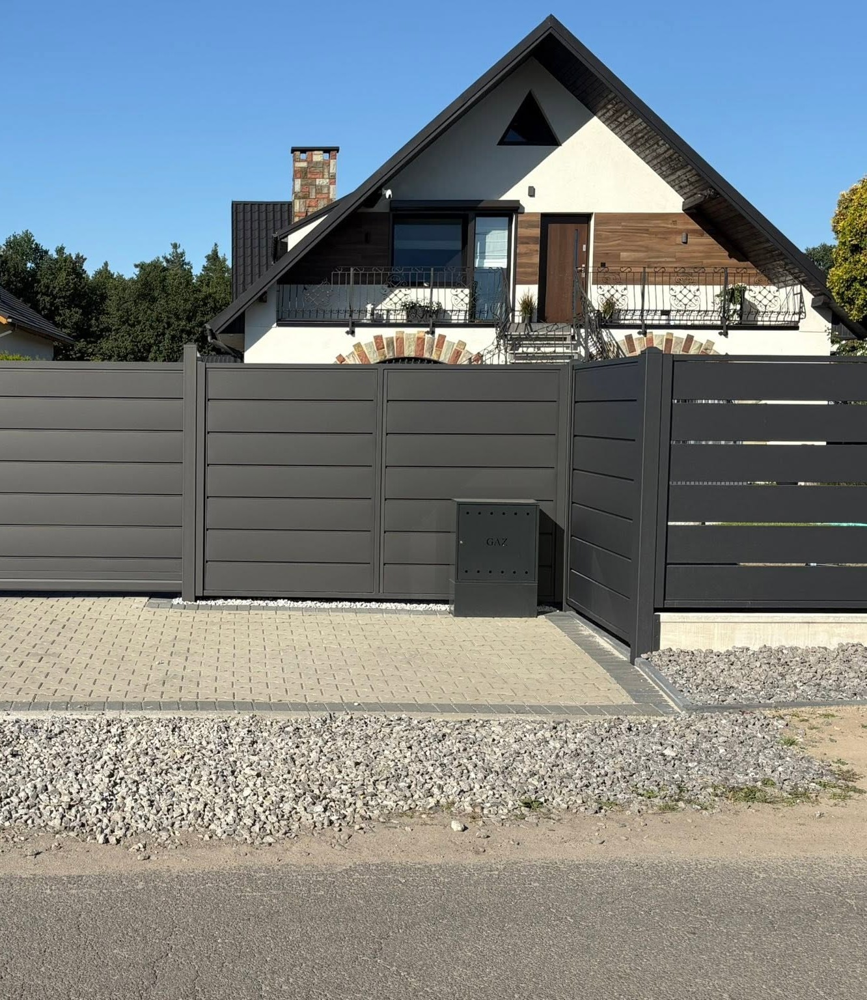

Dobór ogrodzenia do domu, układu działki i sposobu korzystania z posesji albo terenu firmowego. Doradztwo i montaż w Chudowie i okolicy.
Przed wyborem systemu warto uwzględnić szerokość wjazdu, ukształtowanie terenu, oczekiwany poziom prywatności oraz planowaną bramę, automatykę i sposób użytkowania terenu.
Spójna linia frontowa z przęsłami, bramą dobranymi pod względem wzoru, koloru i wysokości.





Rozwiązanie do bocznej i tylnej części posesji, firm oraz wydzielonych terenów. Możliwy montaż z podmurówką.
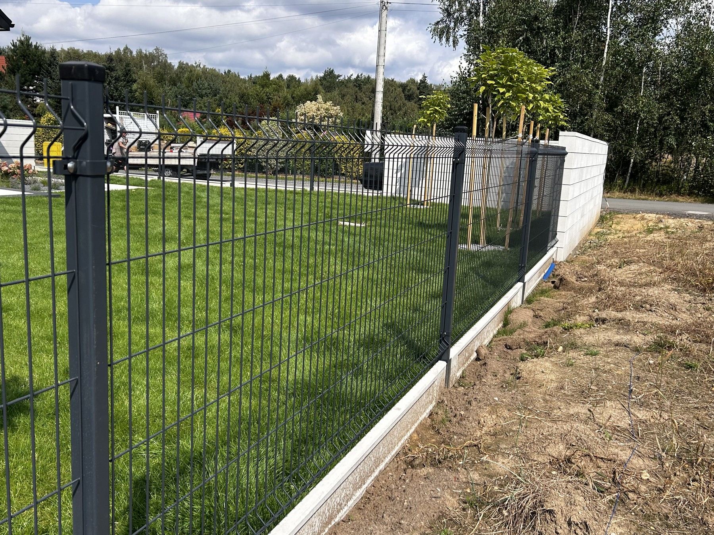

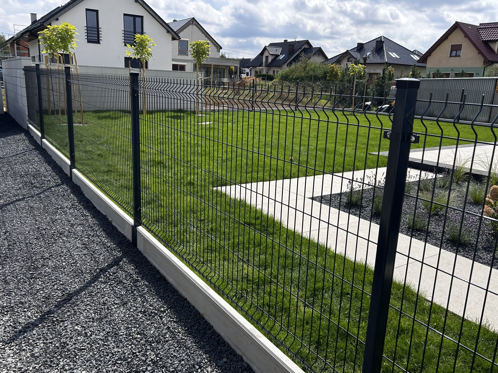
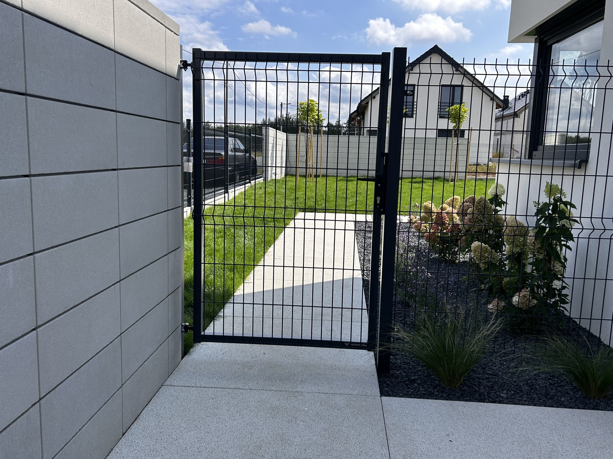
Ogrodzenia i bramy dla firm, obiektów usługowych, terenów publicznych oraz wydzielonych stref. Liczy się trwałość, wygodny wjazd i czytelne zabezpieczenie terenu.
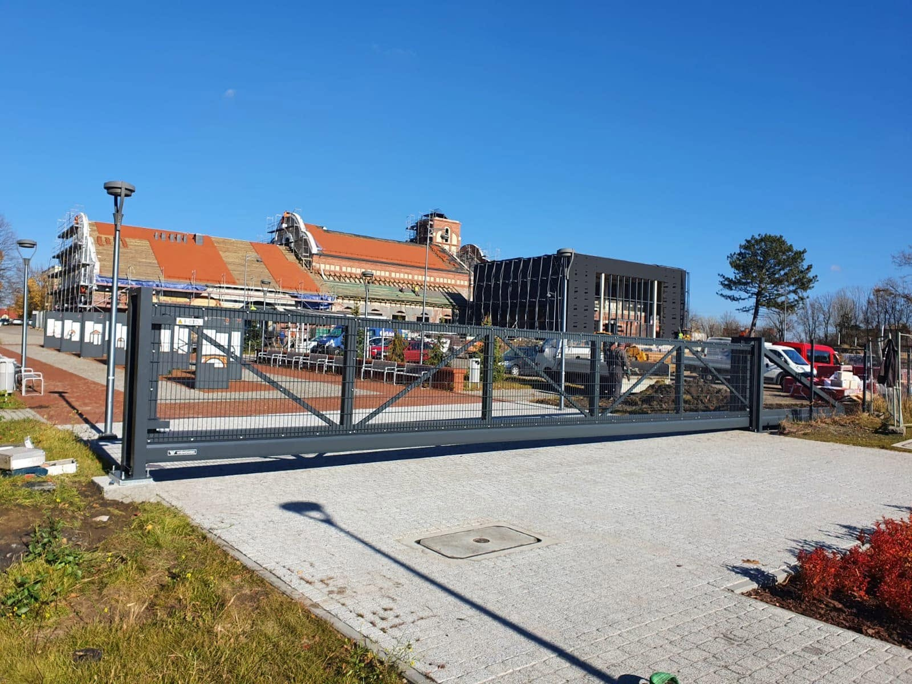
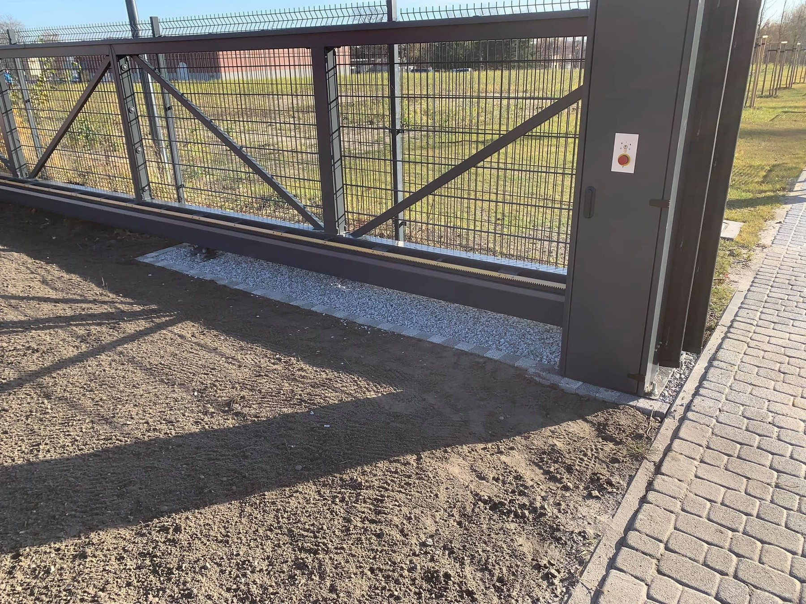
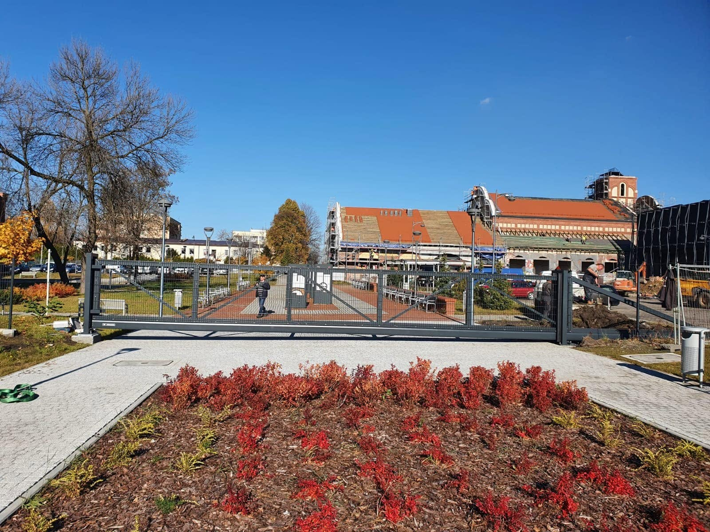
Dobrze zaplanowane ogrodzenie powinno ułatwiać codzienne korzystanie z wjazdu i zachować spójny wygląd z domem.

Podaj miejscowość i przybliżoną długość. Ustalimy, jakich informacji potrzeba dalej.